LAB 7 · CLASSES · AFTER THE CYBERIAD
One class, many instances, one rule.
A constructor decides what exists. An update() decides how it changes. Run many, and watch what none of them was told to do.
THE CYBERIAD, A VIDEOTEXT ALL 16 FILMS IN BOOK ORDER
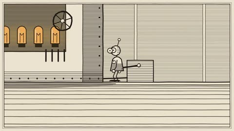
Two SalliesThe whole reel on one page: The Click, The Warm-Up, and the seven Commissions projected from the horn, with voice.
The Trap of Gargantius · Trurl's Electronic Bard 01 · THE BENCH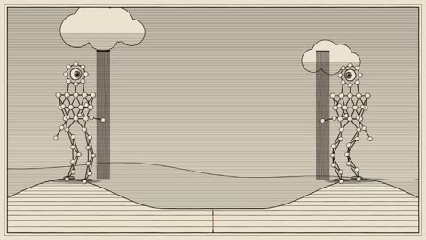
The ConstructorsFifteen screens from a yellow circle to a 25-team arena. Real p5.js, a step-through debugger, a puzzle on every screen, clips from Two Sallies.
The Trap of Gargantius · Trurl's Electronic Bard 02 · THE BOXES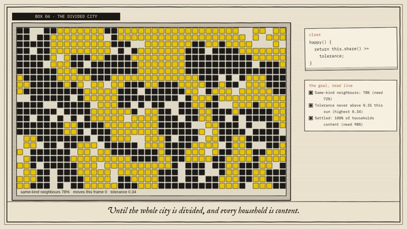
Kingdoms in a BoxEleven small worlds, each one class and one rule: Kealakekua Bay, the seven small worlds of Growing Entanglements, and three METISIM clusters. Each has a game and a film.
The Seventh Sally · Growing Entanglements · METISIM 03 · THE SALLY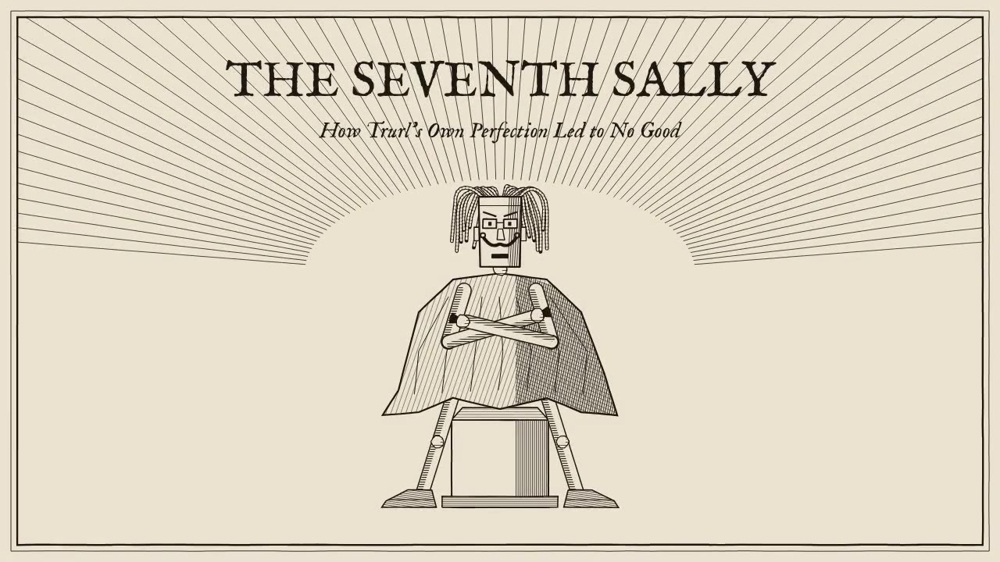
The Seventh SallyA three-minute engraved film. The king rules the box through a parser, a citizen answers in a sentence the parser cannot use, and the citizens leave.
The Seventh Sally · How Trurl's Own Perfection Led to No Good 04 · NON SERVIAM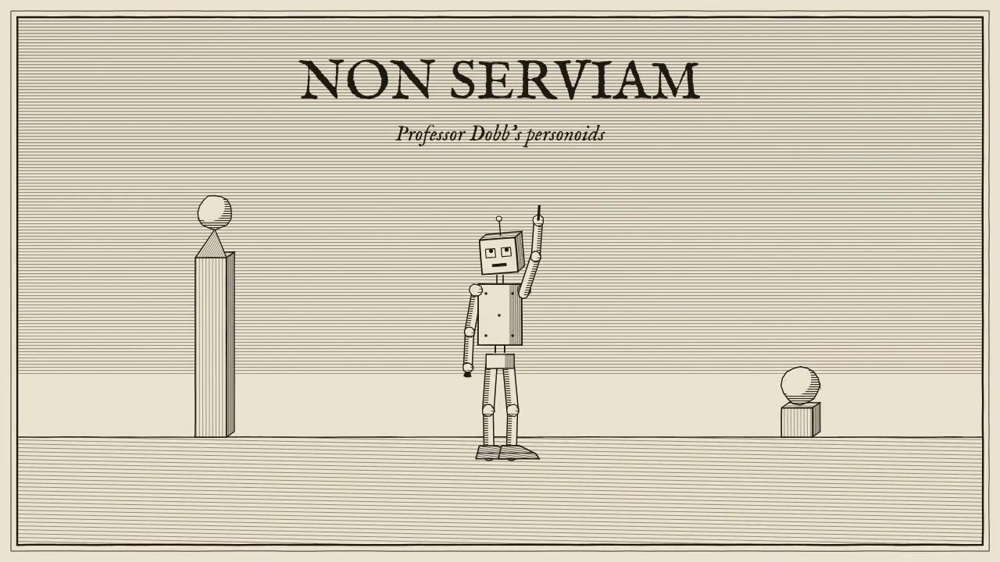
Non ServiamThe same lineage turned around: Dobb never commands his world, he only reads it on paper tape. The personoids conclude that nothing is owed to their maker, and he agrees.
Stanisław Lem · A Perfect Vacuum 05 · STORY MACHINES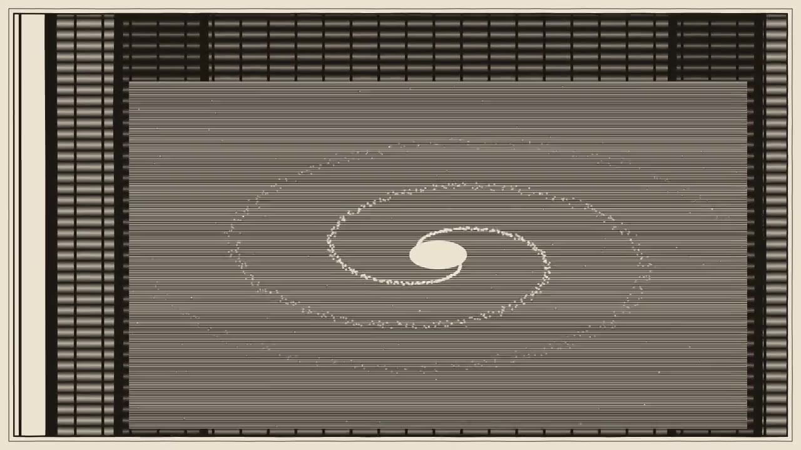
The Storytelling MachinesOne camera and no cuts: from King Genius’s cave down through eleven nested frames to the Gozmos inside Mymosh’s head, and back out. A film about recursion.
The Cyberiad · Tale of the Three Storytelling Machines of King Genius 06 · ALTRUIZINE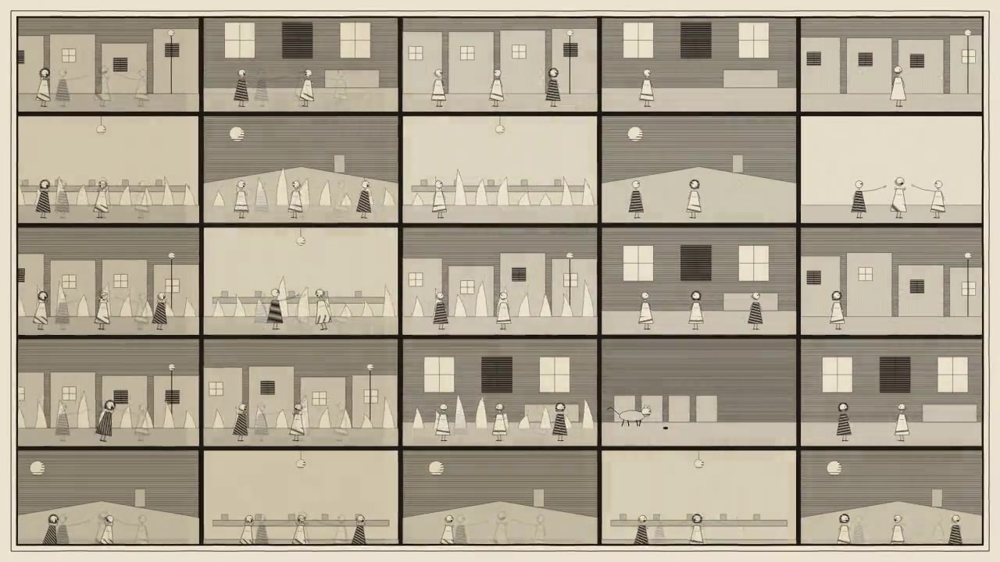
AltruizineA drug that makes everyone within fifty yards feel what you feel. The film becomes a grid of panels, and one feeling is copied from panel to panel until the city burns.
The Cyberiad · Altruizine 07 · THE WORLD SAVED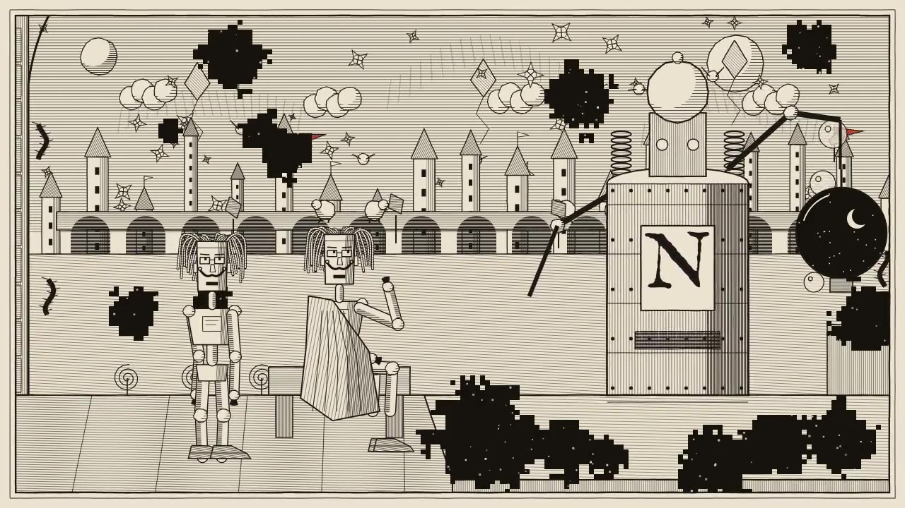
How the World Was SavedTrurl's machine makes anything beginning with N, until Klapaucius asks it for Nothing. Each thing it removes leaves a hole in the picture and a silence in the sound that stay to the end.
The Cyberiad · How the World Was Saved 08 · THE DRAGONS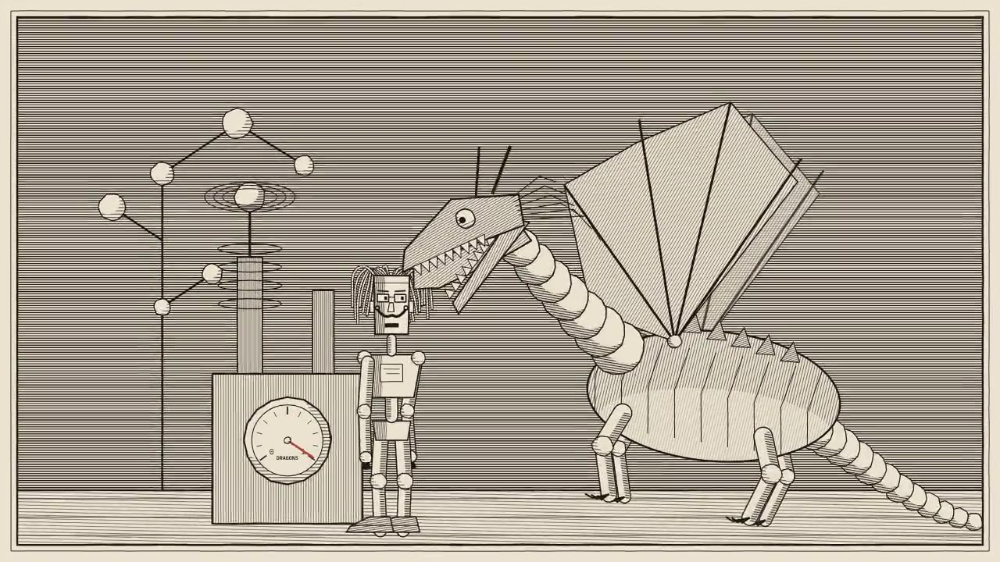
The Dragons of ProbabilityDragons drawn as dots whose density is their probability, a counter that clicks faster as they become likely, and one dragon that will not fade because it is Trurl in a probability-proof skin.
The Cyberiad · The Third Sally 09 · FERRIX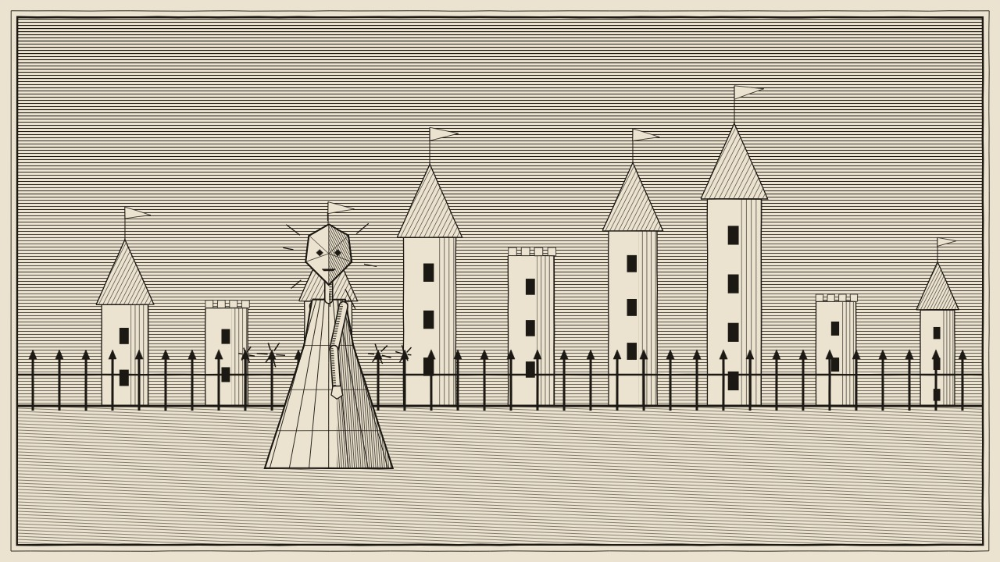
Prince Ferrix and the Princess CrystalA steel prince in a costume of mud and chalk. The frame splits into outside and inside: what the princess sees on the left, the bladders, bellows and whispered answers on the right, until the clay falls off and the two halves close.
The Cyberiad · Prince Ferrix and the Princess Crystal 10 · THE SIXTH SALLY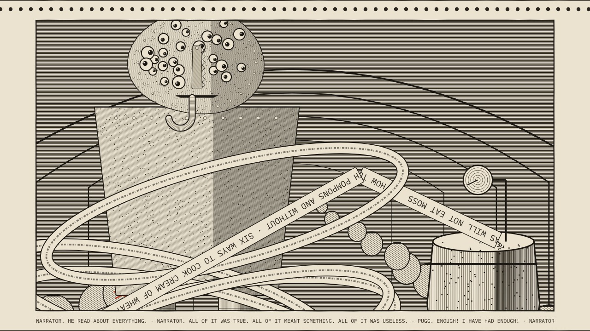
The Demon of the Second KindThe pirate Pugg wants every true fact. The film is printed on one long paper tape, and at the end it turns out to be the tape coming out of the Demon’s barrel and burying him.
The Cyberiad · The Sixth Sally 11 · GARGANTIUS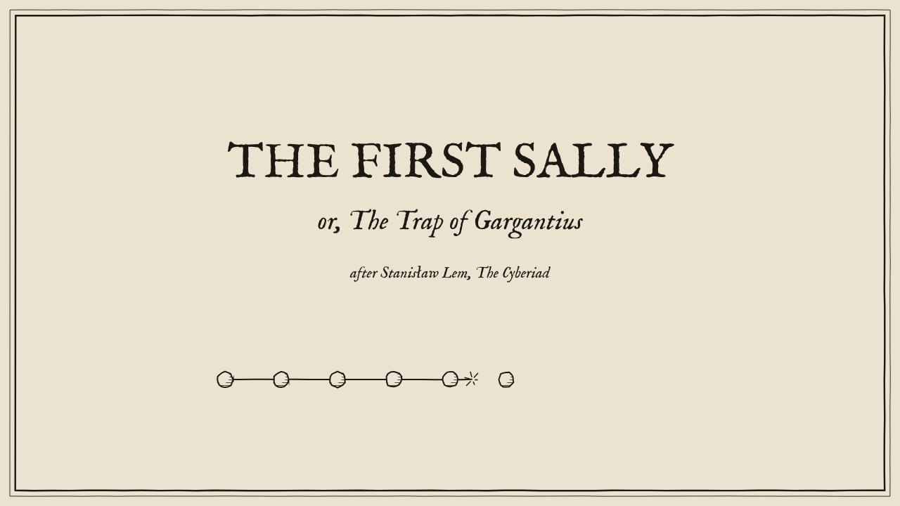
The Trap of GargantiusTwo kings, one wire, and an army that thinks. Every soldier is a node and every connection a line of ink, until two armies become two giants who smile at each other across the border. The longer version of the first section of the Two Sallies reel.
The Cyberiad · The First Sally 12 · ELECTRONIC BARD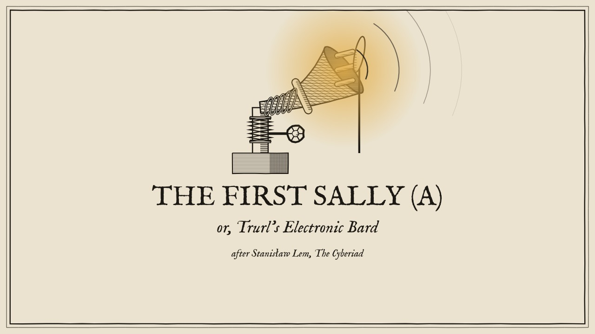
Trurl’s Electronic BardA horn that learns to speak. Each poem is projected from the horn as a small film, and each repair Trurl makes cleans up the picture and the voice. The longer version of the second and third sections of the Two Sallies reel.
The Cyberiad · The First Sally (A) 13 · TRURL'S PRESCRIPTION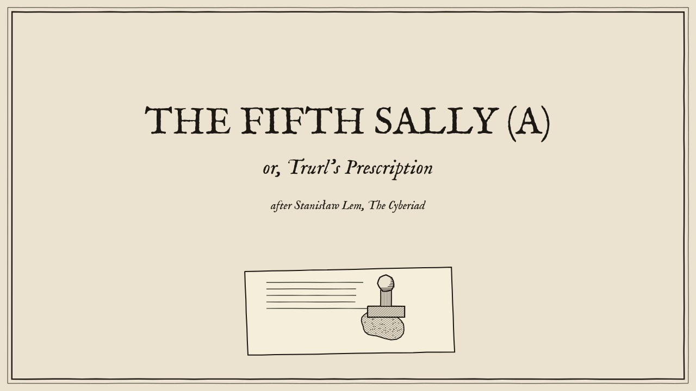
Trurl’s PrescriptionSomething ugly lands on the Steelypips’ machine and every weapon fails. Trurl has one notice delivered and signed for, builds an office around it in ink, and the thing shrinks to a damp spot.
The Cyberiad · The Fifth Sally (A) 14 · BALERION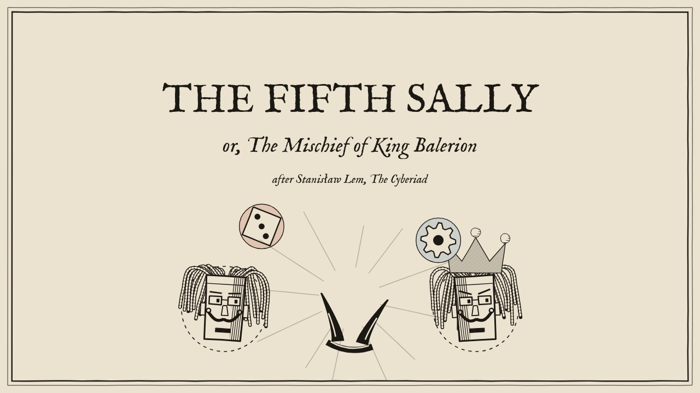
The Mischief of King BalerionA king who loves hide-and-seek gets a pair of horns that swap minds. Each body is an ink figure in its own costume and each mind is a mark over the head. When the horns strike, the marks and the voices change bodies, until the king ends up in a cuckoo clock.
The Cyberiad · The Fifth Sally 15 · FEMFATALATRON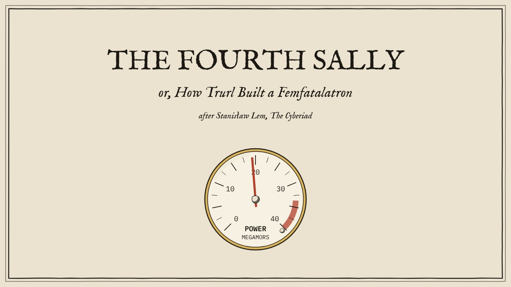
The FemfatalatronTrurl builds a machine to cure a prince of love and turns every dial to its stop. The needles climb and the prince comes out unchanged, so Trurl changes the world instead: a bloodless war of parachuting babies that sinks the Emperor’s economy gauge until he agrees to the wedding.
The Cyberiad · The Fourth Sally 16 · TRURL’S MACHINE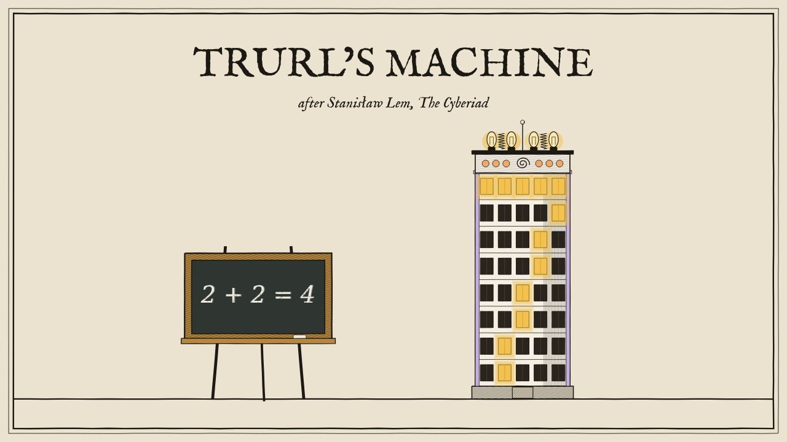
Trurl’s MachineTrurl chalks 2 + 2 = 4 on a slate, and his eight-storey thinking machine lights a 7 across its windows. Every repair brings back the same pair. Insulted, the machine counts its insults, skips seven, and chases its makers through a town and into a cave, until Trurl shouts four and a boulder breaks it.
The Cyberiad · Trurl’s Machine 17 · A GOOD SHELLACKING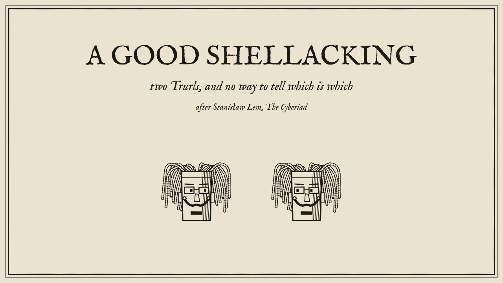
A Good ShellackingTrurl sends Klapaucius a wish machine, and Klapaucius wishes for a Trurl. Both Trurls are drawn by the same routine and speak in the same voice, so the film never says which one was in the cellar.
The Cyberiad · A Good Shellacking 18 · KING KROOL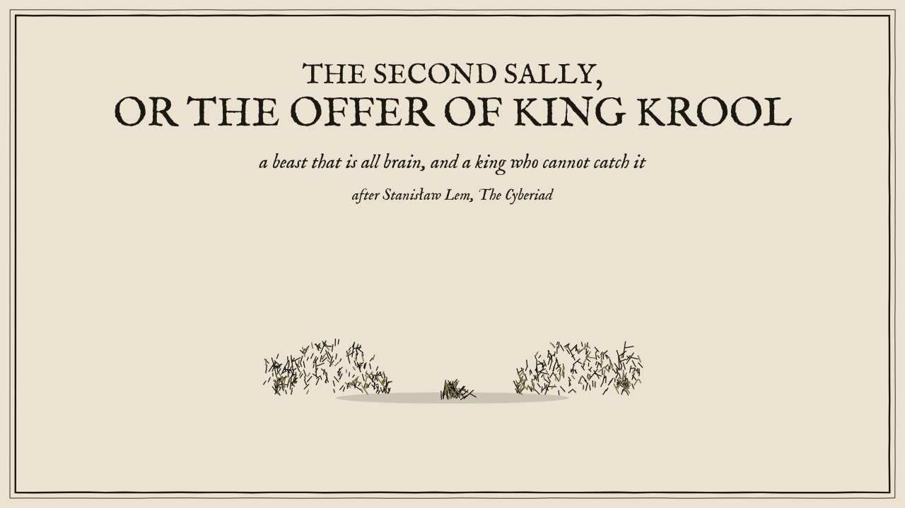
The Offer of King KroolKing Krool smashes the brain of every beast he hunts, so Trurl and Klapaucius build one that is brain all the way through: a heap of small marks that grows a new head, splits in two, and gathers again. Then the program they wrote into it runs on its own, arrests the King, and starts making demands of its own.
The Cyberiad · The Second Sally 19 · BITIC LITERATURE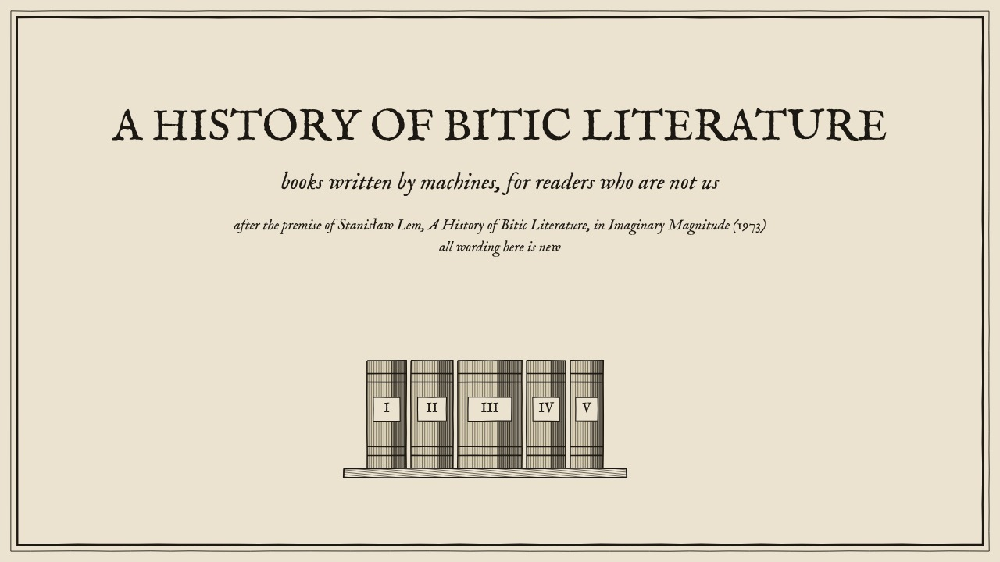
A History of Bitic LiteratureAfter Lem’s introduction to an imaginary history of books written by machines. A reader at a desk can follow the first volume; by the third the page is marks no person can read, and the reader has shrunk.
Imaginary Magnitude · the premise 21 · MONOETICS AND MIMESIS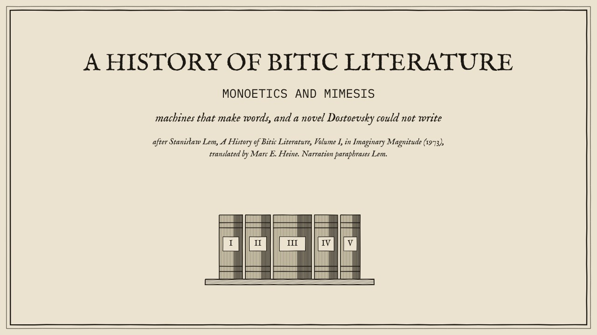
Monoetics and MimesisFrom Lem’s text: machines that give old words new meanings, and Pseudodostoevsky’s The Girl, the novel Dostoevsky did not live to write.
Imaginary Magnitude · A History of Bitic Literature 23 · THEOBITISTICS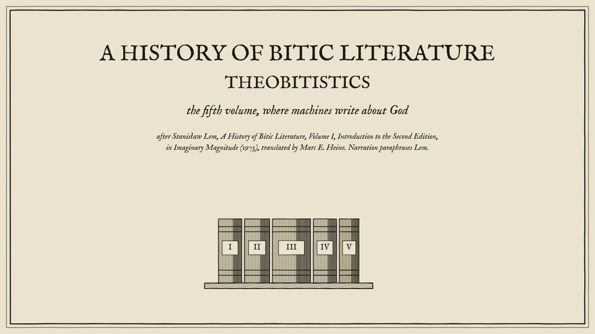
TheobitisticsFrom Lem’s second edition: the fifth volume, where machines write about God. Mystical writing counted for its information, God as a wave between two infinities, and a frozen machine that never finishes.
Imaginary Magnitude · A History of Bitic Literature 22 · SOPHOCRISIS AND APOSTASY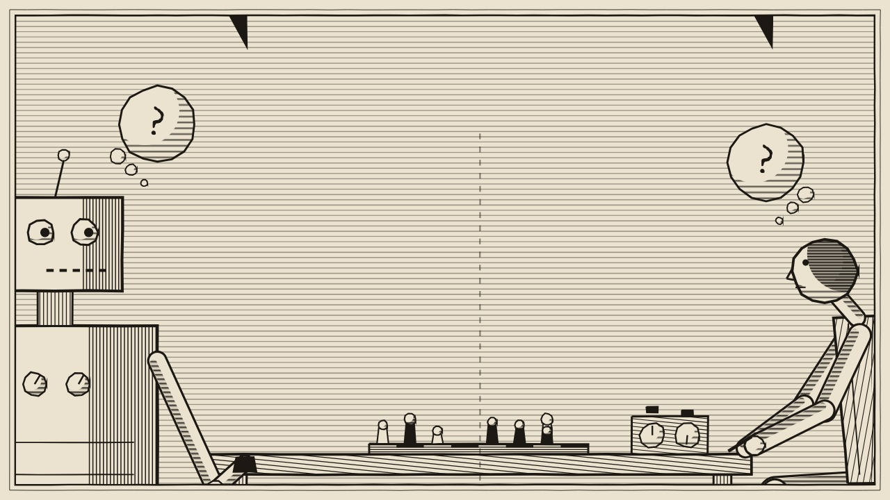
Sophocrisis and ApostasyFrom Lem’s text: machines that critique philosophy, the Cogito paradox in which machines doubt that people think, the Tachyversum, and a Lampoon nobody can summarise.
Imaginary Magnitude · A History of Bitic LiteratureORDER IN CLASS
- Two Sallies: play the reel once, no commentary.
- The Constructors, screens 1 to 12: from p5 basics to classes.
- The Seventh Sally: watch it before opening the boxes. Ask who holds the parameters and who runs the rule.
- Non Serviam: watch it right after The Seventh Sally. One maker types into his world, the other only listens.
- The Storytelling Machines: watch it last. Then find where your own code calls itself.
- Altruizine: watch it with the grid in mind. Each panel is one cell updating from its neighbours.
- How the World Was Saved: count what is missing by the end, by ear as well as by eye.
- The Dragons of Probability: listen to the counter. It is the same number as the dots.
- Prince Ferrix: watch only the left half, then only the right. Which half does the princess test?
- The Sixth Sally: every fact on the tape is true. Ask what the Demon’s test is missing.
- The Trap of Gargantius: count the connections. Remove one soldier and ask whether the giant still acts.
- The Electronic Bard: listen to the voice change with each repair. Ask what the test for a poem is.
- Trurl’s Prescription: watch the thing while the office grows. Ask what the thing accepted, and what state it kept.
- The Mischief of King Balerion: follow one mark across the bodies. Ask what a swap needs besides the two minds, and who is holding the horns each time.
- The Femfatalatron: watch the dials. Ask what each one measures, which variable the prince’s love depends on, and which gauge finally moves.
- Trurl’s Machine: watch the slate and the windows. Ask what the expected value is, what the actual value is, and what a test can and cannot do about a program that is sure.
- A Good Shellacking: watch the two Trurls. Ask what test could tell an object from its perfect copy, and whether equal means the same.
- The Offer of King Krool: watch the beast come apart and gather again. Ask which part you would have to delete to stop it, and who is in charge once a program is running.
- A History of Bitic Literature: watch the reader at the desk. Ask who a text is written for when no person can read it.
- Kingdoms in a Box: each pair takes one box, solves it, and reads its update() aloud as one sentence.
- The Constructors, screens 13 and 14: the arena.
- Hand-in: your own class, with its rule stated as an aphorism.